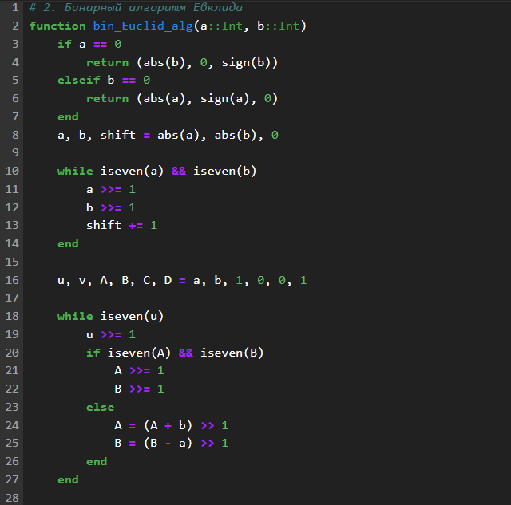
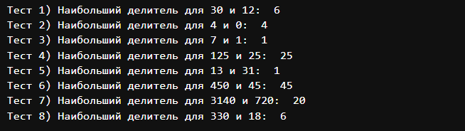
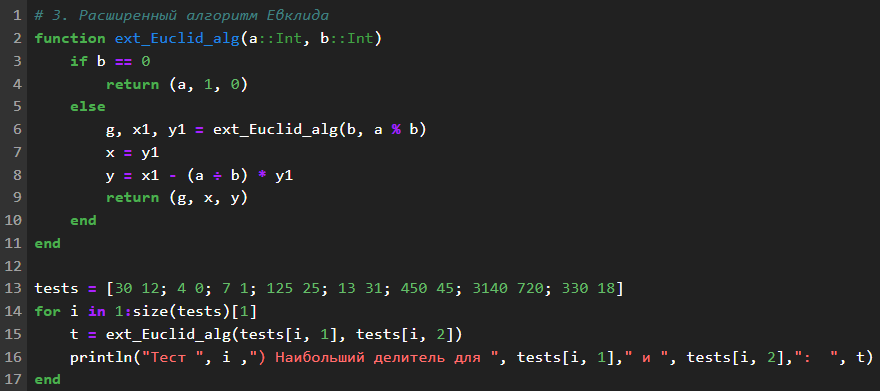
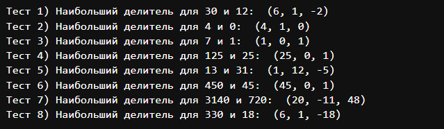
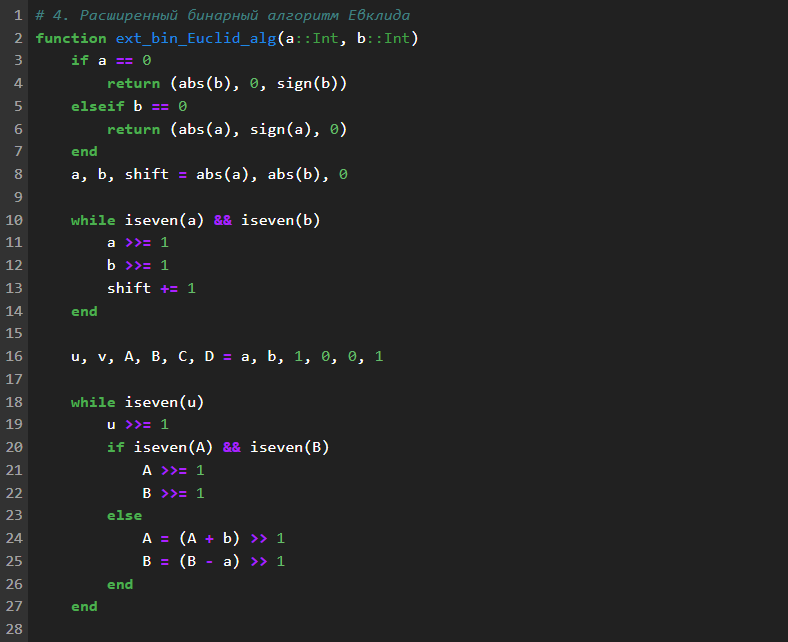

@ignorenonframefalse
Цели и задачи работы
Цель лабораторной работы
Изучить и реализовать все представленные методы Евклида.
Задание
Реализовать классический алгоритм Евклида.
Реализовать бинарный алгоритм Евклида.
Реализовать расширенный алгоритм Евклида.
Реализовать расширенный бинарный алгоритм Евклида.
Теоретическое введение
Классический алгоритм
Евклида:
Особенности:
Основан на делении с остатком.
Простейший и исторически первый вариант.
Алгоритм:
Делим большее число на меньшее, получаем остаток.
Заменяем большее число на меньшее, а меньшее - на остаток.
Повторяем, пока остаток не станет равен нулю.
Последний ненулевой остаток - НОД.
Бинарный алгоритм Евклида:
Особенности:
Основан на битовых операциях (сдвиги, сложение, вычитание).
Работает быстрее на больших числах, чем классический.
Алгоритм:
Используем свойства НОД: НОД(2a, 2b) = 2 * НОД(a, b), НОД(2a, b) =
НОД(a, b) если b нечетно.
Делим числа на 2, пока они оба не станут нечетными.
Вычитаем меньшее из большего, пока они не сравняются.
Умножаем результат на степени двойки, на которые мы делили.
Расширенный алгоритм Евклида:
Особенности:
Находит не только НОД, но и коэффициенты x, y такие, что ax + by =
НОД(a, b).
Важен для решения диофантовых уравнений и работы с модульной
арифметикой.
Алгоритм:
Выполняем классический алгоритм, сохраняя промежуточные
результаты.
Выражаем НОД через исходные числа, используя промежуточные
результаты.
Расширенный бинарный
алгоритм Евклида:
Особенности:
Сочетает в себе преимущества бинарного и расширенного алгоритмов.
Эффективен и находит коэффициенты x, y.
Алгоритм:
Выполняем бинарный алгоритм, сохраняя промежуточные результаты.
Выражаем НОД через исходные числа, используя промежуточные
результаты.
Ход работы
Задание 1
Классический алгоритм
Евклида
Результат 1
Результат алгоритма Евклида
Задание 2

Бинарный алгоритм Евклида 1
Бинарный алгоритм Евклида 2
Результат 2

Результат бинарный Евклида
Задание 3

Расширенный алгоритм Евклида
Результат 3

Результат расширенного
Евклида
Задание 4

Расширенный бинарный алгоритм Евклида
1
Расширенный бинарный алгоритм Евклида
2
Результат 4
Результат расширенного бинарного
Евклида
Выводы по проделанной работе
Вывод
В ходе выполнения лабораторной работы я ознакомился и реализовал
разные варианты алгоритма Евклида для нахождения наибольшего общего
делителя. И в результате был сделан очевидный вывод:
Классический алгоритм - простой и исторически первый.
Бинарный алгоритм - быстрее на больших числах.
Расширенный алгоритм - находит коэффициенты x, y.
Расширенный бинарный алгоритм - сочетает в себе преимущества всех
вышеперечисленных.
И есть другие более гибкие и универсальные способы которые часто
используют в своей основе методы связанные с алгоритмом Евклида.